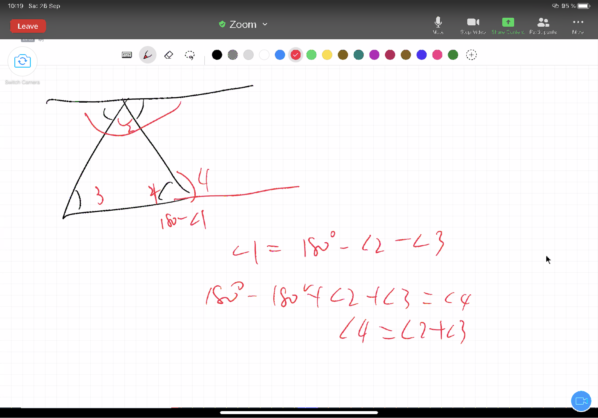

Chapter 15 第十四课（命题二十九到三十二）
上节课学习了平行线的判定条件，命题二十九接下来讲了平行线的性质，并且将三个性质整合在了一个命题当中，且这三个性质其实就是命题二十七和二十八中的判定条件。命题二十七，二十八与命题二十九构成了我们之前上课所学习到的一组充分必要条件。
15.2 命题三十
与同一直线平行的直线们，也互相平行。
命题三十是利用平行的性质进行了进一步的推论。这里我们回忆起公理一：与同一事物相等的事物们彼此互等。这个公理的行文方式与命题三十的声明如出一辙：“与同一直线平行的直线们，也互相平行。“ 这对我们有什么启发呢？这个证明的信服力是否能超越公理一？(为什么感觉似乎并不如此呢？） 让我们想象直线A与B各自延伸永不相交，但是直线A投影在直线B上的直线C与A平行，与C相交。然而不要被这个想法迷惑，因为回到平行的定义，(平行直线是在同一个平面，向两个方向无限延伸并互不相交的直线。)是需要直线在同一个平面上的。尽管命题三十没有写出同一个平面的隐含条件，然而它还是存在的，也因此这个想象被排除在了欧几里得的世界之外。是不是总是想要找到欧几里得的破绽却最后还是钦佩这个系统的严谨性？

15.3 命题三十一
过定点，画一条直线，使平行于另一条直线。
命题三十一的证明过程十分轻松愉快，而这里值得讨论的问题是，是否过一个定点对一条直线，只能画出一条平行线？这里的唯一性意味着什么呢？在学习平行定义的时候，我们曾经讨论，是否可以用”两条直线上各对应点之间的距离永远相等“来取代”两个方向延伸但并不相交“这个说法，看到命题三十一中所隐含的唯一性这个特点，能否感觉到”两条直线上各对应点之间的距离永远相等“这个特性？那么为什么欧几里得没有用这个方式去进行定义呢？在我眼中，这个问题绕了一圈又回到了定义四：直线是线，这条线均匀地铺于其（线）上的点。
欧几里得并没有完全定义线和点之间的关系，我们并不能够将无限相连点之间的的相等距离等价到两条直线之间的距离等价。这个点到线的巨大鸿沟才是定义平行线时的困难。
另外，命题十二(给定一无限直线，在线外一给定点上，画垂线。) 垂线似乎也是唯一的，并且垂线是通过证明两个相邻角互等而作出的。平行线则是通过证明内错角相等而证出的。在命题二十二的时候我们有看到从线到角到图形的脉络，而画垂线和画平行线这里的证明则意味着，从角到线的回路也是相通的。
15.4 命题三十二
在任意三角形中，如果延长一边，那么外角等于两内对角之和，且三个内角的和等于两直角。
命题三十二是两个部分，总体来讲，承接了命题十六(在任意三角形中，如果延长其中一边，那么外角大于(任一)内对角。)和命题十七(在任意三角形中，以任意方式取任意两角，其两角（之和）小于两直角)。我们会发现当我们证明完命题三十二的时候，十六和十七就基本不会再被调用了，因为它默认包含在了命题三十二的涉及内容之中：外角等于两内对角之和，自然也就大于任一内对角，三个内角的和等于两直角，那么三个角中其中任意两个之和也就必然小于两内角。
尽管看起来命题十六十七到命题三十二也不过是往前进了小小的一步，然而这个过程却是艰辛无比，不能省略的。就好像你在一把伞从骨架到加上伞面，似乎只是盖上了伞面，然而伞面需要多步骤的工艺来实现它，然后才能装到伞架上。
另外关于命题三十二，Alex自己想了一个不同的证明方法，也是非常可行的。 